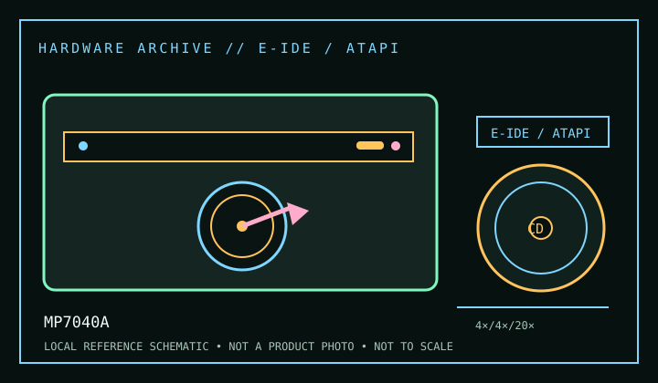

[ CD-R AND CD-RW DRIVES // IDENTIFIED MODEL ]
Ricoh MP7040A
Internal E-IDE/ATAPI 4× CD-R/4× CD-RW recorder with up-to-20× CD read. The trailing “A” identifies the ATAPI variant; confirm model markings before applying these notes.

IDENTIFICATION: Confirm the manufacturer label, complete model suffix, interface and firmware revision against the cited manual before installation or archival use. Ratings are maximums; actual performance depends on media, mode, host and software.
Documented specifications
| Subcategory | CD-R and CD-RW drives |
|---|---|
| Exact model | MP7040A |
| CD-R write | 4× |
| CD-RW rewrite | 4× |
| CD-ROM / CD read | 20× |
| Recorded/read formats | Records CD-R and CD-RW; reads CD-ROM and CD-R/RW media plus CD audio, Video CD and Photo CD formats listed in product documentation. Compatibility with packet-written discs depends on UDF/packet software installed on the host. |
| Recording modes | Disc-at-Once, Track-at-Once, multisession and packet-writing support are application-dependent. Retain the original recording software version and verification logs when recreating a legacy workflow. |
| Interface / mechanics | E-IDE/ATAPI, internal 5.25-inch drive. Configure master/slave/cable-select as allowed by the unit and host channel; use a known-good 40-pin ATA cable and correct power connection. |
| Host and operating-system compatibility | ATAPI optical driver plus compatible authoring/packet software are required. Legacy bundled utilities may rely on period Windows versions and drivers; on current systems, basic reading through an adapter is not proof that writing, audio extraction or packet access works. |
| Firmware / revision notes | Check the inquiry string and firmware revision before any service or update. Firmware for another MP7040 family variant is not interchangeable by assumption. The rated 4× recording modes require media and authoring software recognized by this generation of drive. |
Compatibility & preservation notes
- ATAPI optical driver plus compatible authoring/packet software are required. Legacy bundled utilities may rely on period Windows versions and drivers; on current systems, basic reading through an adapter is not proof that writing, audio extraction or packet access works.
- Check the inquiry string and firmware revision before any service or update. Firmware for another MP7040 family variant is not interchangeable by assumption. The rated 4× recording modes require media and authoring software recognized by this generation of drive.
- For an imaging or recording session, log the exact drive and firmware, interface/controller, operating system, application version, media identifier, selected mode and any read/verification errors. Keep checksummed image copies and logs.
- Handle discs at the edge or center hole and store in cases in a cool, dry place away from direct sunlight. Avoid adhesive labels, abrasive cleaning and undocumented solvents or polishing.
Read support is not write support. A format listed for this drive does not guarantee every disc revision or copy-protection scheme will work.
Sources
- Ricoh MP7040A specifications, Bitsavers/Internet ArchiveArchived technical specification scan for the exact MP7040A family.
- Ricoh MP7040A user manual, ManualsLib archiveArchived model manual for setup and operating notes; cross-check exact revision.
- Library of Congress — CD-R and DVD-R/RW longevityArchival media-care guidance; it does not establish recorder-specific compatibility.